Reflectometry View
The reflectometry view combines all the components needing to run most experiments for a reflectometer in one place; it is only available on reflectometers and replaces the scripting view. Below is an example of this view from POLREF.
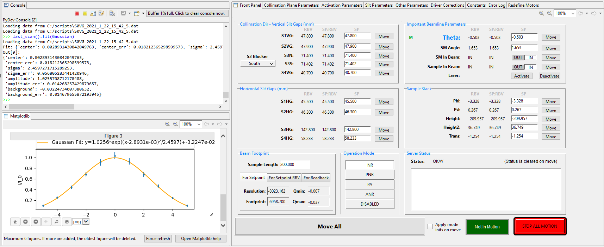This screen is split into 3 main areas shown in this schematic rendering.
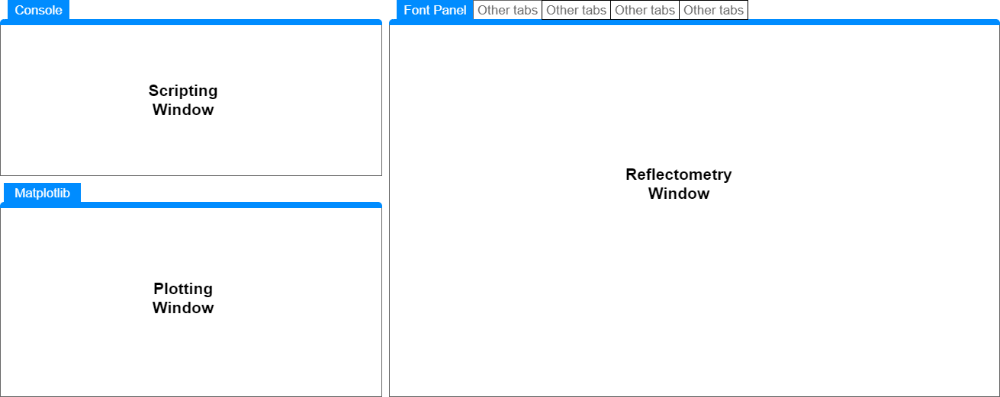Scripting Window: This is a python console which allow you to issue commands to the reflectometry IOC. These commands range in complexity from getting the value of a parameter to a full alignment.
Plotting Window: This shows plots created using matplotlib. Matplotlib is a python plotting library that can be used from the scripting window; The scan command will draw it plots to here too.
Reflectometry Window: This is the main view of the reflectometer. It displays where the reflectometer is and allow you to set where it should move to. This view consists of multiple tabs and the next sections will explain their uses and introduce the conventions that are used.
Conventions
Parameters
Most screens show lists of parameters. Each of those parameters has a similar form, for example:
Real number parameter
IN Out of beam parameter
Real number parameter with a characteristic value
Each parameter has multiple bits and these are (starting on the left):
Letters: Indicate some information about the parameter. M means that the parameter is in the current mode (see Operation Mode below)
Label (in bold): The name of the parameter. Usually the same as the block name.
RBV Value: The readback, this is the current position of the reflectometer; usually this is relative to the beam.
SP:RBV Value: The setpoint readback, this where the reflectometer will move to when the move all button is pressed or when another parameter’s move button is pressed and this parameter is in the mode. If the setpoint is set then it would move to that value instead.
SP Box/Button/Drop Down: The setpoint, this is the value that the motor will move to if the parameter move button is pressed or the move all button is pressed.
Move button: The parameters move button, when pressed it will cause the parameter’s setpoint to be applied and the reflectometer to move to the new position. If it is in the mode then all other parameters in the mode will also be set.
Characteristic Value (Optional): This is a value which is a characteristic value you might want to consider when reading the parameter. Often this is the motor position which most represents the parameter.
Parameter States
Moving
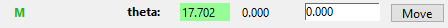Readback value (RBV) has a green background: an underlying motor for the parameter is moving
Changed/Set
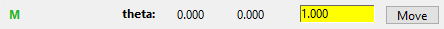Set point (SP) has a yellow background: the setpoint has been changed but not yet applied to the reflectometer. It will be applied when either the move all button is pressed or the parameters move button is pressed
Component Out of the Beam
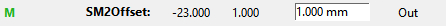Individual parameter move button is replaced with an “Out” label. This indicates that the component for the axis this parameter controls is currently parked out of beam. You can still enter set points but they will not be applied to the axis until the component is moved back into the beam.
Set-point mirrors Readback
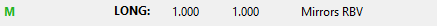This parameter is setup so that the setpoint mirrors the readback value, on every move the setpoint gets set to the current readback value. This is useful for an axis that can affect position calculations but cannot be actively moved by the reflectometry server. The readback setpoint (RBV:SP) can be different to the readback value (RBV) because it is only set when the parameter is moved to, i.e. the underlying motor has moved since last beamline move.
Not in Position
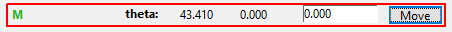Whole parameter area has a single red border: this shows that the movement has stopped but that the setpoint and readback do not agree. This could be because the tolerance is too tight (motors can only achieve a certain accuracy) but more likely is that a motor has not stopped at the right place. Check the positions and if necessary repeat the movement. This should be reported to an Instrument scientist as it may indicate a future problem.
Minor Alarm
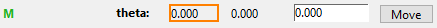Readback (RBV) has an orange border (tool tip include the word MINOR): there is a minor error with the parameter, check the value looks sensible. This can be that the underlying motor has hit a limit switch and stopped, which is expected for some parameters.
Major Alarm
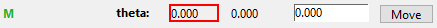Readback (RBV) has an red border (tool tip include the word MAJOR): there is a major error with the parameter. Stop using it until you find out what is wrong.
Invalid
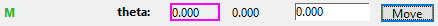Readback (RBV) has an purple border (tool tip include the word INVALID): the parameter is invalid. This is usually because the underlying motor has stopped responding. Stop using the reflectometer and find out what has gone wrong
Reflectometry View Tabs
Front Panel
Each instrument has a unique front panel but they all have a similar layout. The schematic view shows the main areas of the panel. For peculiarities of instruments see the instrument specific pages in the dev manual
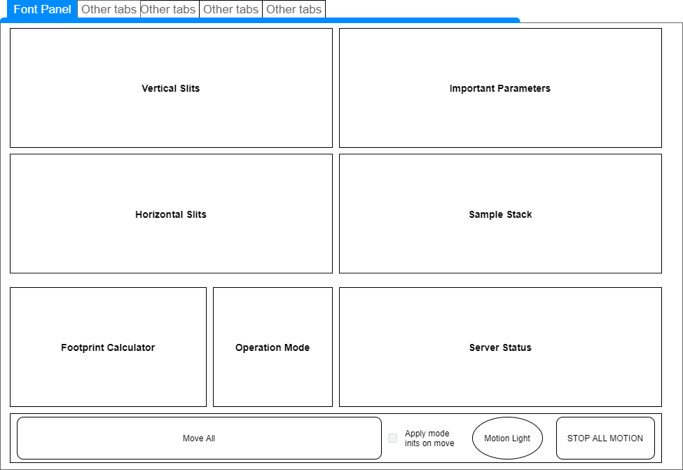Vertical Slits / Horizontal Slits
The vertical and horizontal slit sections allows the slits to be set in the various direction, the parameters are displayed and set as standard parameters. Note that:
Several instruments have a beam blocker mode. Beam blocker mode can be set using the drop down. In this mode the user controls the slit positions directly and not the gaps; to help with this the gaps are no longer displayed and the blades are displayed instead.
POLREF can have the sample horizontal or vertical, the slits controlling the collimation of the beam are always top left (i.e. vertical when the sample is horizontal and horizontal when the sample is vertical).
Important Parameters
The important parameters section contains parameters that control the overall beam path. For instance theta is normally top right (and on some instruments the label is slightly larger). This section may also contain super mirror angles, and whether the beam line is in laser mode. Laser mode is where components, e.g. the monitor are removed from the beam to allow the laser to travel through the system for alignment.
Sample Stack
These parameters control the position of the sample. In general the sample stack is not included in the mode so will not be automatically set when you change the rest of the parameters. E.g. if you change the super mirror angle the sample stack will not track the beam. Instead you must set the parameters or click the move button to make the sample stack move to its new position. The degrees of freedom depend on the beamline, some common degrees of freedom are:
Phi: angle in the same direction as theta, this is relative to the incoming beam to the sample and so should be the same as theta when you want to maintain the elastic scattering condition.
Psi/Chi: rotate the sample in the planes other than theta for alignment.
Height: Distance between the beam and the centre of rotation; usually set a 0. This moves the course z stage tracking the beam.
Height2: Distance from the sample centre of rotation to the sample. This is used to align the sample with the beam. Some instruments do not have a height2 and so should use height for this purpose as well.
Trans: Distance perpendicular to the beam for the sample
Footprint Calculator
The footprint calculator calculates the resolution and beam footprint given parameters about your sample. There are three calculation, one for the setpoint, one for setpoint RBV and one for the readback.
Operation Mode
The operation mode panel allows you to set the mode that beamline should run in. A mode consists of two part, initial value and a list of parameters that are in the mode. Initial values are the value for parameters, e.g. whether a components is in the beam or the values position of a slit. If the apply mode inits on move checkbox is checked then the initial values will be reapplied every time the beam line is moved. Which parameters are in the mode determines which parameters will be reapplied as the beam moves. So if a slit is in the mode as the beam moves its distance to the beam will be kept constant. Whereas if the slit is not in the mode it will not move its position unless a new set point is set or the move button is pressed.
Common modes are:
NR: Neutron reflection, no super mirror just reflect from the sample
PNR: Polarised neutron reflection, this mode uses a super mirror to reflect or polarise the beam
DISABLED: In this mode the tracking is disabled, components move relative to their positions at the point the mode is selected (with the exception of theta which will still move the detector or bench). For instance, if you where at 0 theta and 0 supermirror angle and entered DISABLE mode then a move of supermirror angle would just change that angle, a change in a slit offset would still be relative to the 0 position not the current beam position. This mode is used during super mirror alignment and when the experiment is outside of the normal parameters for other modes.
Server Status
The server status panel reports information, warnings and error that occur in the IOC. If there is a warning or error it should be taken seriously and the fault should be fixed before taking data. The status is cleared before each move.
Known errors that can be ignored (and will be fixed in upcoming releases):
None
Apply move inits on mode
When Apply move inits on mode is ticked and move all is pressed then all the initial values for the mode will be set before the move, this will override any you have set. The move will then commence normally to that position. This is usually the correct when running an experiment because the initial values set up most components to track the beam with an offset of 0.
Motion Indicator
The motion indicator is green when a motor is moving somewhere on the beamline. Currently it will also flicker if one of the motor encoders is changing between two values, this often happens when the motor stops between two values; we hope to fix this issue in the future.
STOP ALL MOTION
Press the STOP ALL MOTION button if something is going wrong, it will stop all motors.
Collimation Plane Parameters
Parameters on the collimation plane parameters tab are parameters which related to positions in the collimation plane. For example if the beam moves in the vertical plane these will be height offsets and phi/theta like angles.
Activation Parameters
Parameters on the activation parameters tab set whether components are active in the beam. For example whether the super mirror is in the beam or not.
Slit Parameters
The slit parameters tab contains parameters that control the slit gaps and positions for both horizontal and vertical slits.
Other Parameters
The other parameters tab displays parameter which are those not found on other tabs, they tend to control movement in the non collimation plan, e.g. translation of the sample.
Driver Corrections
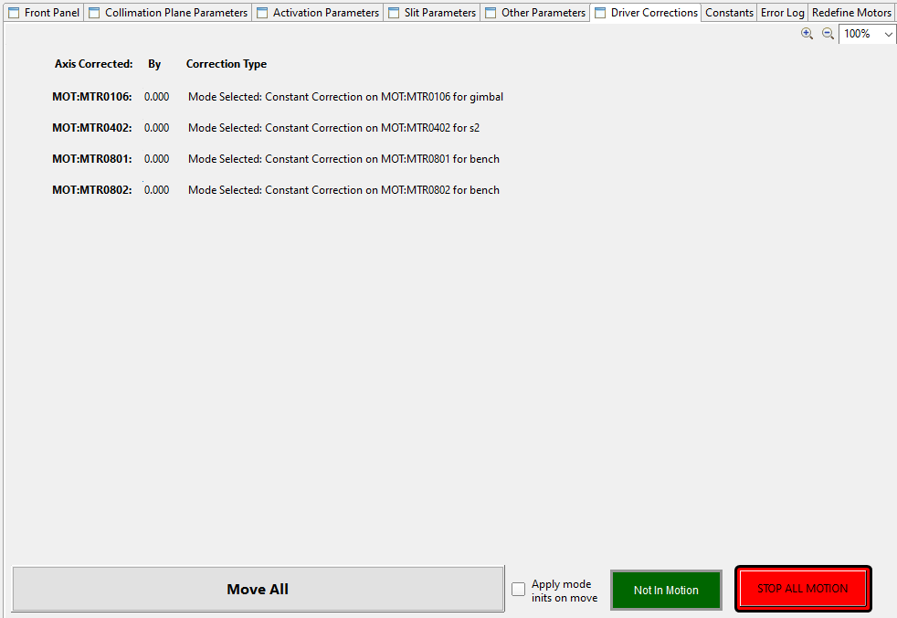The driver correction tab displays the value of any engineering corrections that are currently being applied to the motors. Engineering corrections are set in the configuration file and allow the instrument scientist to correct the positions of components which do not follow the geometric calculation of the reflectometry IOC. This is one of the reasons why a motor position may be different from a geometric calculation of the beam.
Constants
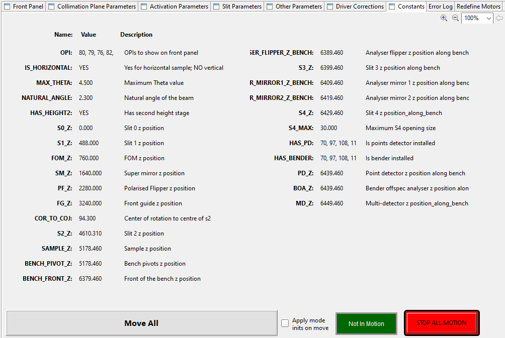The constants panel shows the constants for the current instrument and configuration and can be accessed in scripts if needed. These contains mostly positions of the components along the beamline.
Error Log
The error log tab shows a more detailed view of errors reported in the instrument status panel.
Advanced
The advanced panel is for Instrument Scientists only. It allows them to more easily align the instrument.